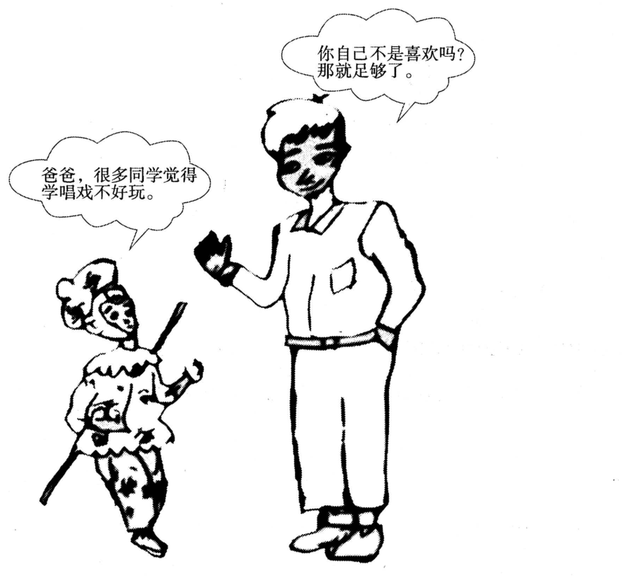

A小作文 · 给刚毕业、想来中国找工作的外国朋友写一封建议邮件（10 分）
A foreign friend of yours has recently graduated from college and intends to find a job in China. Write him/her an e-mail to make some suggestions.
You should write about 100 words on the ANSWER SHEET.
Do not use your own name in the email; use “Li Ming” instead. (10 points)
💭 审题三件事
- ⭐⭐⭐ 先想他会卡在哪，而不是中国有什么好。一个外国人、刚毕业、要在中国找工作——三道坎依次是：能不能合法工作（工作许可）→ 去哪找（城市、雇主）→ 去了怎么过（语言）。三道坎各给一条建议，顺序就是他办事的顺序。
- ⭐⭐ 「刚毕业」这个词最值钱。外国人在华工作许可（B 类）一般要本科以上 ＋ 两年相关工作经验，应届生恰恰没有；部分城市对应届生另有通道。⟹ 第一条建议写「先查许可规则、找能为你办许可的雇主」——这一句证明你读懂了读者是谁。
- ⭐ 朋友之间，末段给一句能兑现的帮忙。If you like, I can send you some job websites and introduce you to friends working here.——比 I am looking forward to your reply 有人情味，也比「有困难随时找我」具体。
⭐⭐ 十六年 Part A：2021 是第一封「读者自己就是执行者」的建议信
| 年份 | 体裁 | 读者是谁 | 第一句怎么起 | 落款 | 本年特有的坑 |
|---|---|---|---|---|---|
| 2007 | 建议信 | 校图书馆（机构） | I am writing to put forward several suggestions … | Li Ming | 建议只有口号没有可执行动作；写成投诉信 |
| 2008 | 道歉信 | 具名熟人 Bob | I am writing to apologize for … | Li Ming | 只道歉不给方案；方案没有「动作＋方式＋时间」 |
| 2009 | 致编辑信 | 报社编辑 | I am writing to express my concern about … | Li Ming | 建议里没有一条是编辑自己能办的 |
| 2010 | 通知 NOTICE （招募） | 一群人（无称呼） | Volunteers are needed for … | 机构名（题干给） | 写 Dear ＝ 体裁错；落款签 Li Ming |
| 2011 | 推荐信 · 荐物 | 未具名的一个朋友 | How have you been? I am writing to recommend … | Li Ming | 写成影评／剧透结局；通篇只有「我」没有「你」 |
| 2012 | 欢迎邮件 （以组织名义） | 一群国际学生 但仍是书信 | On behalf of the Students’ Union, I would like to extend a warm welcome to … | Li Ming ＋ Students’ Union | 按 2010 的手感写成通知；通篇 I 没有 we |
| 2013 | 邀请邮件 （担任角色） | 本校外教 | As chair of the English Club, I am writing to invite you to … | Li Ming | 只邀请、不交代工作量；没给答复期限 |
| 2014 | 建议信（撞 2007） | 本校校长 | As a third-year student, I am writing to suggest … | Li Ming | 建议写成对学生的劝告；用 should 下指令 |
| 2015 | 荐书邮件（撞 2011） | 读书会的一群会员 | As host of next Friday’s reading session, I would like to recommend … | Li Ming | 理由不对着读书会用途；剧透 |
| 2016 | 通知 NOTICE （告知 · 撞 2010） | 刚入学的国际学生（撞 2012） | Welcome to the University Library! To help all newly-enrolled international students … | Li Ming | 按 2012 写成欢迎信；信息写成广告 |
| 2017 | 推荐邮件 · 荐地方 （撞 2011／2015） | 具名的新到外籍教授 | Welcome to our city! Now that you have settled in, I would like to recommend … | Li Ming | 理由对谁都成立；推他家门口就有的；Dear James |
| 2018 | 邀请邮件 · 请出席 （撞 2013） | 全校国际专家（一群人） | On behalf of the Students’ Union, I am writing to invite you to this year’s graduation ceremony. | Li Ming | 时间地点写成「下个月」「在学校」；漏了为什么请您；称呼写成单数 |
| 2019 | 答复邮件 · 回复咨询 （十三年第一次） | 一位国际学生志愿者 | Thank you for your email about the “Aiding Rural Primary Schools” project. | Li Ming | 不回应来信就开讲；角色反了；忘了他是外国人 |
| 2020 | 通知 NOTICE · 活动 （撞 2010／2016） | 全体国际学生（上台的 ＋ 来听的） | To welcome the New Year, the Student Union will hold a singing contest for all international students … | Student Union （题干没给，自己推） | 手顺签了 Li Ming；只招选手忘了观众；没说唱什么语言 |
| 2021 本题 | ⭐⭐ 建议邮件 · 给朋友本人 （撞 2007／2014 的体裁） | 一个外国朋友（应届毕业生 · him/her 自起名） | Congratulations on your graduation! I am glad you are thinking of starting your career in China, and here are a few suggestions. | Li Ming （instead 回来了） | ⭐⭐⭐ 建议对谁都成立（简历、面试、自信）、没用上「刚毕业」；⭐⭐ 写成「中国很好、欢迎你来」的介绍；写给朋友用公文腔；him/her 照抄进称呼 |
| 2022 | 邀请邮件 （带队参赛） | 英国大学的教授 | On behalf of …, I am writing to invite you to … | Li Ming | 漏时间/地点/事由 |
- ⭐⭐ 2014 回到 2007 · 2015 回到 2011 · 2016 拼了 2010 × 2012 · 2017 拼了 2011／2015 × 2013 · 2018 拼了 2013 × 2012／2016 · 2019 新体裁（答复信）· 2020 通知第三次 · 2021 建议信第三次——体裁取 2007／2014，读者取 2011 的「a friend of yours」，内容取 2012 的「给外国人提建议」（2012 是 provide some suggestions for their campus life here）。⟹ 「押体裁没用」第九次验证：押中了「建议信」，也得重新想这封信的建议由谁执行。
- ⭐⭐⭐ 2014 页立的判据「建议必须是读者自己能办的」，这一年天然满足——读者就是当事人。难点于是挪到了另一头：建议必须是「这个读者」才需要的。三条建议里要是挑不出一条只对「刚毕业的外国人」成立，就等于没读题。
- ⭐⭐ 外国读者十六年里第九次、连着六年：2008 加拿大房东 · 2012 国际学生 · 2013 外教 · 2016 国际新生 · 2017 澳大利亚教授 · 2018 国际专家 · 2019 国际学生志愿者 · 2020 全体国际学生 · 2021 外国朋友。前八次里，除了 2008 那位远在加拿大的房东，读者都是已经到了中国（多半就在校园里）的人；2021 第一次是「还没来、想来」的人——所以第一道坎不是「在这里怎么过」，而是「能不能合法地来工作」。
- ⭐ 落款回到 Li Ming：2020 的「不给 instead」只出现了一年；2021 的措辞与 2019 一字不差（Do not use your own name in the email; use “Li Ming” instead.）。⟹ 纪律不变：照题干抄，题干不给才推。
⭐⭐ 三封建议信并排：2007 · 2014 · 2021（本页新增）
体裁都是建议信、格式都是书信——变量是建议由谁去执行：前两封写给「替别人改东西的人」，这一封写给「自己要上路的人」。
| 对照项 | 2007 · 给图书馆 | 2014 · 给校长 | 2021 · 给朋友本人 |
|---|---|---|---|
| 题干动词 | making suggestions for improving its service | suggesting how to improve students’ physical condition | Write him/her an e-mail to make some suggestions |
| 读者 | 一个机构 | 握着权限的一个人 | ⭐ 要去找工作的那个人本人（朋友 · 外国人 · 应届生） |
| 建议由谁执行 | 图书馆 | 校长（替学生改） | ⭐⭐⭐ 读者自己 ⟹ 每条都是他能马上去做的动作 |
| 写信人站在哪 | 使用者，提意见 | 学生，替同学说话 | ⭐ 朋友、本地人 ⟹ 知道门路，能搭把手 |
| 语气 | 礼貌、正式 | 恭敬、正式（不许用 should 下指令） | ⭐⭐ 亲切但具体：可以用 First / Second 直接给，朋友之间祈使句不失礼 |
| 第一句 | I am writing to put forward several suggestions … | As a third-year student, I am writing to suggest … | Congratulations on your graduation! I am glad you are thinking of starting your career in China … |
| 收尾 | I would be grateful if these could be taken into consideration. | I would be grateful for your consideration. | If you like, I can send you some job websites and introduce you to friends working here. |
⚠️ Directions 限定词清算表（开考先圈出来）
| 限定词 | 它约束什么 | 违反的后果 |
|---|---|---|
| A foreign friend | ⭐⭐ 外国人 ⟹ 工作许可、语言两道坎是他特有的 | 通篇没提许可、没提语言 ⟹ 写给一个中国同学也成立 |
| friend of yours | 朋友 ⟹ 亲切语气；能提供帮助 | I am writing to …／Yours faithfully（公文腔）；只给建议、不搭把手 |
| has recently graduated from college | ⭐⭐⭐ 应届 ⟹ 没有工作经验；先祝贺毕业 | 建议他「凭你多年经验」；或者完全没意识到「刚毕业」意味着什么 |
| intends to find a job | 他已经打算好了 ⟹ 建议是「怎么找」，不是「要不要来」 | 劝他先读研、先考虑清楚、别来——违背了 intends |
| a job in China | 具体到中国：城市、渠道、语言 | 建议对任何国家都成立（写好简历、准备面试） |
| Write him/her an e-mail | 书信格式；⭐ 自己起名、定一个性别 | Dear him/her、Dear friend（照抄题干）；前面 she 后面 he |
| to make some suggestions | 复数 ⟹ 两到三条，每条有理由 | 只给一条；或列五六条、每条一个短语，没有一条讲清楚 |
| about 100 words | 95–115（称呼、落款不计） | 写成 150 词挤占大作文时间 |
| use “Li Ming” instead | 落款 Li Ming；正文里也不出现真名 | 签真名有判零风险；凭 2020 的记忆落了别的 |
🧩 筛子表：读者身上的五个词（本页新增）
2016 两道筛子、2017 三道、2018 四道挂在读者身上，2019、2020 读者 ＋ 事件两边挂；2021 五道全挂在一个人身上：foreign · friend · recently graduated · find a job · in China。过得越多越值钱，一道都不过的删掉。
| 候选建议 | 外国 | 朋友 | 应届 | 找工作 | 在中国 | 写不写 · 本文写成了哪一句 |
|---|---|---|---|---|---|---|
| ⭐⭐⭐ 先查工作许可，找能办许可的雇主 | ✅✅ | — | ✅✅ | ✅✅ | ✅ | First, check the work permit rules before you apply. Many positions require two years of work experience, though some cities make exceptions for new graduates, so look for employers who can sponsor you. |
| ⭐⭐ 挑城市 | ✅ | — | — | ✅✅ | ✅✅ | Second, choose your city with care: Shanghai and Shenzhen offer more international jobs, while smaller cities are cheaper and quieter. |
| ⭐⭐ 学中文 | ✅✅ | — | — | ✅ | ✅ | Third, keep up your Chinese, since even simple phrases help in interviews and daily life. |
| ⭐ 祝贺毕业 | — | ✅ | ✅✅ | — | — | Congratulations on your graduation! |
| ⭐⭐ 我能帮你什么 | — | ✅✅ | — | ✅ | ✅ | If you like, I can send you some job websites and introduce you to friends working here. |
| 当外语老师 | ✅ | — | △ | ✅ | ✅ | 备选，但要加条件：外语教师的许可同样看资质（相关学位或教学证书）——没把握的细节宁可不写 |
| 写好简历、准备面试、保持自信 | ✗ | — | — | ✅ | ✗ | ❌ 当主建议：对任何国家、任何人都成立，五道筛子只过一道 |
| 「中国经济发展快、机会多，欢迎你」 | — | — | — | △ | △ | ❌ 介绍不是建议：他已经 intends to 来了，用不着被说服 |
| 先在国内读研／再考虑考虑 | — | — | ✗ | ✗ | ✗ | ❌ 违背题干：他打算来中国找工作 |
- ⭐⭐ 工作许可那一句是查过的：外国人在华工作许可的专业人才类（B 类）一般要求本科以上 ＋ 两年相关工作经验；上海等地的政府问答里写明，部分应届毕业生（如境外高水平大学或本地高校毕业生）可以免交工作经历证明，深圳、浦东等地对特定领域的应届生另有通道；许可由雇主申请。⟹ 范文写成 Many positions require two years of work experience, though some cities make exceptions for new graduates, so look for employers who can sponsor you.——「many」「some」都留了余地，不把政策写死。考场上记不准就只写 check the work permit rules early，同样拿到「读懂了 foreign ＋ recently graduated」这一分。
- ⭐ 城市写两类、各一个理由：大城市 more international jobs（机会）· 小城市 cheaper and quieter（生活）——不替他选，给他一把尺子。❌ Beijing is the best city in China.（替人拍板，还说不出理由）
- ⭐ 语言写「保持」不写「学会」：keep up your Chinese 暗含他已经学过一点（想来中国工作的人大多如此）；even simple phrases 降低门槛——❌ You must master Chinese first.（门槛抬得太高，也不是朋友的口气）
- ⚠️ 名字与代词：him/her ⟹ 本文选 Emma（女），全文代词跟着走——不过本文正好一个第三人称代词都没用，写给「你」的信本来就该如此。
✍️ 范文（ 词 · 🟡 亮点点击看讲解）
Dear Emma,
祝贺 ＋ 来意Congratulations on your graduation! I am glad you are thinking of starting your career in China, and here are a few suggestions.
建议一 · 许可First, check the work permit rules before you apply. Many positions require two years of work experience, though some cities make exceptions for new graduates, so look for employers who can sponsor you.
建议二三 · 城市 ＋ 语言Second, choose your city with care: Shanghai and Shenzhen offer more international jobs, while smaller cities are cheaper and quieter. Third, keep up your Chinese, since even simple phrases help in interviews and daily life.
搭把手If you like, I can send you some job websites and introduce you to friends working here.
Best wishes,
Li Ming
祝贺你毕业！很高兴你打算在中国开始你的职业生涯，下面是我的几条建议。
第一，投简历之前先把工作许可的规定查清楚。很多岗位要求两年工作经验，不过有些城市对应届毕业生有例外，所以要找能为你办理许可的雇主。
第二，慎重选择城市：上海、深圳的国际化岗位更多，小一些的城市则生活成本更低、也更安静。第三，坚持学中文，哪怕几句简单的话，在面试和日常生活里都用得上。
如果你愿意，我可以给你发几个招聘网站，再把你介绍给在这里工作的朋友。
祝好！
李明
- ⭐⭐⭐ 要点三条建议对谁都成立：write a good résumé · prepare for interviews · be confident。读者身上五个词一个没用——阅卷人读不出你知道他是外国人、是应届生、要来中国。✅ 至少一条只对「刚毕业的外国人」成立（工作许可 ＋ 两年经验）。
- ⭐⭐ 要点写成「中国欢迎你」：China is developing rapidly and offers many opportunities … 他已经 intends to 来了，要的是怎么找，不是要不要来。
- ⭐⭐ 要点劝他别来、先读研：违背 intends to find a job in China。
- ⭐ 语气写给朋友用公文腔：I am writing to offer you some suggestions concerning … · Yours faithfully。朋友之间 Congratulations … ／ Best wishes 就好。
- ⭐ 格式照抄 him/her：Dear him/her · Dear friend。✅ 自己起名（2011 Dear Tom · 2019 Dear Daniel · 2021 Dear Emma）。
- ⭐ 落款落款 Li Ming——2020 那年没给 instead，今年给了，照抄；真名任何地方都不出现。
- 语言❌ Congratulate your graduation · ❌ find a job in China’s · ❌ work visa permission · ❌ improve your Chinese level · ❌ introduce my friends to you（意思反了：是把你介绍给朋友） ⟹ ✅ Congratulations on your graduation · a work permit · keep up / brush up your Chinese · introduce you to friends。
- 字数about 100 words：95–115 最稳。本文 词（不含称呼与落款）。
- ⭐⭐ 第一段两句，先人后事：Congratulations on your graduation! 接住 recently graduated；I am glad you are thinking of starting your career in China, 接住 intends to find a job in China——题干的两个信息都被「回应」了一遍，才转进建议。
- ⭐ are thinking of doing：进行时 ＋ think of，「正在打算」——比 want to 软，对应 intends to；starting your career 比 finding a job 更像朋友的口吻（你人生的一个开始）。
- ⭐⭐ 第一条建议四个零件：动作 · 事实 · 例外 · 结论：check … → Many positions require … → though some cities … → so look for …——一句话把「为什么」「怎么办」都给了，比 You should pay attention to the visa 具体十倍。
- ⭐ though 作让步连词：不放句首，放在主句后补一句「不过」——先给坏消息、再给出路，朋友的口气。
- ⭐ employers who can sponsor you：sponsor（为……担保、办手续）是签证语境的现成词；工作许可由雇主申请，这一句也顺带交代了程序。
- ⭐⭐ 冒号 ＋ while 对照：choose your city with care: Shanghai and Shenzhen offer more international jobs, while smaller cities are cheaper and quieter.——冒号后解释「为什么要慎重」，while 连接两类城市各自的好处，不替他做决定。
- ⭐ since 引原因：since even simple phrases help in interviews and daily life——interviews 接 find a job，daily life 接 in China，一个理由照顾两个筛子。
- ⭐⭐ 末段是朋友才写得出的：If you like, I can send you some job websites and introduce you to friends working here.——If you like（不强加）· 两件能兑现的事（发网址、介绍人）· introduce you to sb（把你介绍给某人，方向别弄反）· friends working here（现在分词作后置定语）。
- 落款左对齐两行：Best wishes, ／ Li Ming；e-mail 不写地址、不写日期。
B大作文 · 图画作文（20 分）
Write an essay of 160–200 words based on the picture below. In your essay, you should
1) describe the picture briefly,
2) interpret the implied meaning, and
3) give your comments.
Write your answer on the ANSWER SHEET. (20 points)

- 单幅，两个人，父子；Directions 回到 the picture below（单数，同 2018、2019；2020 是 pictures below）。
- 左下：小男孩穿着孙悟空的戏服（猴王头饰、带斑点的戏装），斜挎一根长棍（金箍棒），扭头朝向父亲。对话框：「爸爸，很多同学觉得学唱戏不好玩。」
- 右边：父亲个子很高，右手抬起、掌心向外，左手插在裤兜里——姿态放松，不像在训话。对话框：「你自己不是喜欢吗？那就足够了。」
- ⭐ 两个对话框都有尾巴，各指着一个人 ⟹ 是说出口的话，可以直接引出；⭐⭐ 两句是「接着说」：孩子先开口，父亲回答（与 2019 一答一劝同型，与 2012、2017、2020 的「并排说」相反）。
- ⭐⭐⭐ 没有图注——十五年里第二次（上一次 2012 也是两句对白、没有标题；2007 是连字都没有）。⟹ 没人替你命名这幅图，第二段的论点只能从两句话里来；而父亲的第二句「那就足够了」本身就是一个结论。
- ⚠️ 图上没有的东西别补：孩子没说他不想学、没说同学笑话他；父亲没说戏曲是国粹、没说同学不对；画面里也没有同学。
💭 审题：两句话都在「数」——一个数人头，一个说「够了」
- 先看到题材：孙悟空 ＋ 唱戏 ⟹ 传统文化后继乏人、要弘扬国粹。这一步人人都能看到，可回到两句话一查：两个人谁都没提「传统」——孩子说的是「好不好玩」，父亲说的是「你喜不喜欢」。传统文化是这幅图的布景，不是它的台词。
- ⭐⭐⭐ 再把两句话逐词对。孩子：很多同学 · 觉得 · 不好玩；父亲：你自己 · 喜欢 · 足够。⟹ 「很多」对「足够」——两句都在数，孩子数的是人头（有多少人这么看），父亲说一个就够（你自己）。评判的人从一群换成了一个：这就是第二段第一层。
- ⭐⭐ 再看父亲怎么说。他用的是反问（不是……吗）——答案他早知道，孩子身上那套戏服就是证据；他没替戏曲辩护（没说「其实很好玩」），也没说同学错（没说「别管他们」）。⟹ 他没回答「戏好不好」，而是换掉了「谁说了算」。最后的「足够」是充分条件：你的喜欢不需要别的理由来撑——这是第二层，也是第三段要接着说的东西。
- 「爸爸，很多同学觉得学唱戏不好玩。」✅ “Dad, many of my classmates think learning Peking Opera is no fun.” ／ “Dad, lots of my classmates say learning opera is boring.”。⚠️ 「唱戏」≠ sing songs：唱戏是戏曲的统称，写 Chinese opera 最稳；图上是孙悟空扮相（京剧猴戏），写 Peking Opera 也说得通。「不好玩」 ⟹ no fun ／ boring。❌ learning singing play is not funny（唱戏 ≠ singing play；funny ＝ 好笑，不是好玩）· ❌ many classmates think that learn opera …（动名词作主语要 learning）
- 「你自己不是喜欢吗？那就足够了。」✅ “Don’t you like it yourself? Then that’s enough.” ／ “But you like it, don’t you? That’s all that matters.”。⚠️ 「不是……吗」是反问，英文用否定疑问句 Don’t you …? 或反意疑问句；「你自己」的「自己」要译出来（yourself）——它正好和「很多同学」对着；「那就」 ⟹ Then。❌ You yourself don’t like it?（变成真疑问，语气全反）· ❌ That is enough for you.（多出 for you，「够」的对象变了）
- 没有图注 ⟹ 第一句别编一个标题：❌ The picture, entitled “Interest”, shows …（图上没有这个字）。✅ The picture shows … 直接起。
📐 描图段三看（本图版 · 单幅两人、一问一答、无图注）
| 看什么 | 本图看出来的 | 写进文章的哪一句 |
|---|---|---|
| ① 看图上的字 | 两句对白（都有尾巴，孩子先说、父亲后答）；没有图注 | “Dad, many of my classmates think learning Peking Opera is no fun,” he says. … “Don’t you like it yourself? Then that’s enough.” |
| ② 看最反常处 | ⭐⭐ 孩子在报告别人的看法，父亲却不接这个话题——不辩护、不反驳，反问回孩子本人 | He neither defends opera nor blames the classmates; he simply moves the judge from the crowd to the child. |
| ③ 看两人的样子 | ⭐ 孩子已经穿好戏服、拿着棍（他在学，而且看起来挺投入）；父亲一手抬起、一手插兜（放松，像在随口回答） | a little boy dressed as the Monkey King, staff in hand … Raising one hand, the father answers with a question of his own |
⭐⭐⭐ 两句话逐词对：「很多」对「足够」（本页新增）
2017 页定下「两句话先找公约数」，2019 页看一答一劝谁让了什么步，2020 页先拆出同一个骨架；2021 两句是接着说的一问一答（同 2019）——先逐个成分对齐，再看父亲换掉了哪一个。
| 成分 | 孩子：很多同学觉得学唱戏不好玩 | 父亲：你自己不是喜欢吗？那就足够了 | 说明什么 |
|---|---|---|---|
| ⭐⭐⭐ 谁来评判 | 很多同学 | 你自己 | 评判的人从一群换成了一个 ⟹ 第二段 The boy counts heads … The father counts only one |
| ⭐⭐⭐ 数量词 | 很多（人数） | 足够（够不够） | 两句都在数：一个问「有多少人」，一个答「一个就够」——多不多不重要，够不够才重要 |
| 动词 | 觉得（评价：给它打分） | 喜欢（感受：对它有感情） | ⭐ 同学在评价一件事，孩子是在经历一件事——评价可以从外面给，喜欢只能从里面来 |
| 标准 | 好不好玩 | 喜不喜欢 | 都是「感受」这一把尺子，父亲没换尺子，只换了拿尺子的人（他没说「好玩不重要，有意义才重要」） |
| 句类 | 陈述（转述别人） | 反问 ＋ 判断 | ⭐⭐ 反问 ＝ 提醒：答案孩子自己有，父亲只是让他说出来；判断句「那就足够了」＝ 充分条件 |
| 没说出口的 | （我还要不要学下去？） | （戏好不好、同学对不对——都不评） | ⚠️ 孩子没说要放弃，父亲没说同学错——这两样别替他们说 |
| 画面 | 孩子穿着孙悟空戏服、拿着棍 · 父亲一手抬起一手插兜 · 没有图注 | ⭐⭐ 戏服回答了父亲的反问：没人会为一门自己不喜欢的戏穿成这样 ⟹ The costume has already answered his question | |
- ⭐⭐ 一个是计数，一个是门槛：「很多」回答「有几个」，「足够」回答「到没到」。孩子拿人数来衡量一件事值不值得做，父亲把衡量方式改成了一道门槛——你自己喜欢，门槛就过了，人数再多也不加分、不减分。
- ⭐⭐ 父亲回答的不是孩子字面上的话：孩子字面上报告了一个事实（同学这么觉得），真正在问的是「那我还要不要学」；父亲也没回答「要不要学」，而是告诉他拿什么来决定。⟹ 第二段写「换了评判者」，第三段写「为什么该由自己评判」。
- ⭐ 五年五种「两句话」：2017 两句结构相同 ⟹ 公约数；2018 两张清单 ⟹ 唯一交锋项；2019 一答一劝 ⟹ 公约数 ＋ 交锋点；2020 两条规矩 ⟹ 骨架相同、换掉的词不同；2021 一问一答 ⟹ 标准没换，换的是拿标准的人。动作还是那一个：逐词对。
🧩 图上字的语法结构，决定文章的论证结构（十四型扩到十五型：新增「一句转述他人看法 ＋ 一句反问加判断的回答，无图注」）
| 年份 | 图上的字是什么结构 | 文章就得怎么搭 |
|---|---|---|
| 2007 | 无字，只有两个想象气泡 | 靠对比两个气泡立意 |
| 2008 | 因果句：你一条腿，我一条腿；你我一起，走南闯北 | 顺着因果推。单线论证 |
| 2009 | 对举短语（同一主语 ＋ 两个形容词）：网络的“近”与“远” | 两边都写，还要回答为什么同一个东西既近又远 |
| 2010 | 比喻式判断句：文化“火锅”：既美味又营养 | 先解喻，再分别落实两个并列谓语 |
| 2011 | 引号双关式短语：旅程之“余” | 破字 → 对照句 → 指认施动者 |
| 2012 | 两句对白（无图注）：全完了！／幸好还剩点儿。 | 转述 → 拿画面核对真假 → 看手 |
| 2013 | 一词图注 ＋ 并列标签：选择 ／ 求职·考研·出国·创业 | 全译 → 不排座次 → 追问谁来选 |
| 2014 | 两格时间标签 ＋ 一词图注：三十年前…… ／ 现在…… ／ 相携 | 两格同构描 → 列变与不变 → 在两格之间解图注 |
| 2015 | 偏正短语：手机时代的聚会 | 写中心语，拆开看哪一半还在，矛头别指定语 |
| 2016 | 取舍复句：与其只提要求，不如做个榜样 | 两分句各配一格 → 第二段写机制 → 第三段解限定副词「只」 |
| 2017 | 一字之差的动宾对举：“有书”与“读书” | 两个短语各配一格 → 盯住被换掉的动词 → 末段把两个动词收拢 |
| 2018 | 进行时图注 ＋ 两张三条的清单：选课进行时 ／ 知识新·重创新·有难度…… ／ 给分高·易通过·作业少…… | 两张清单全译 → 摆到同一把尺子上找唯一交锋项 → 第三段对着「进行时」说话 |
| 2019 | 一答一劝的对白 ＋ 两字时段图注：累了，我不爬了。／别呀！休息一下再接着爬。／途中 | 两句全译 → 看第二句让了什么步、不让的是哪一个字 → 第三段对着「途中」说话 |
| 2020 | 两格各一句条件紧缩句 ＋ 一词抽象名词图注：尽早完成才放心 ／ 不到最后不动手 ／ 习惯 | 两句全译、条件别丢 → 先拆出同一个骨架，再看骨架里换掉的词 → 第三段对着图注写「每一次」 |
| 2021 本题 | 一句转述他人看法 ＋ 一句反问加判断的回答（无图注）：爸爸，很多同学觉得学唱戏不好玩。／你自己不是喜欢吗？那就足够了。 | ⭐ 三步走：① 两句全译、反问别译成真疑问（Don’t you …?）；② ⭐⭐⭐ 逐词对齐，找出被换掉的那一个（很多同学 → 你自己：换了评判者，没换标准）；③ ⭐⭐ 父亲的「足够」已经是结论 ⟹ 第二段不复述它、而是说它替换了什么，第三段说为什么该由自己评判 |
| 2022 | 对话：两名学生就要不要听讲座的两句话 | 转述两句对话并选边站 |
- ⭐⭐⭐ 2012 ↔ 2021：都没有图注，都是两句对白——隔了九年。2012 两人并排说（同一个瓶子、相反的反应）⟹ 写心态之差；2021 两人接着说（一问一答）⟹ 写第二句换掉了第一句的什么。没有图注的年份，第二段的论点要自己从对白里抽——这一年抽出来的是「评判者」。
- ⭐⭐ 2016 ↔ 2021：父子图，结论都已经写在图上——2016 写在图注（与其只提要求，不如做个榜样），2021 写在父亲嘴里（那就足够了）。⟹ 2016 页的纪律原样适用：图上已经说出的论点，第二段不许复述，要说它替换了什么（2016 替换了「只提要求」，2021 替换了「看多少人怎么想」）。⚠️ 另一个对照：2016 父亲是被批评的一方，2021 父亲是说出道理的一方——别按 2016 的手感写「家长该反思」。
- ⭐⭐ 2019 ↔ 2021：单幅两人、接着说——2019 是劝（别呀！休息一下再接着爬），2021 是以问作答（你自己不是喜欢吗？）。两年都是第二句的人让了一步：2019 先同意「该休息」，2021 先默认「同学确实这么觉得」——都没去争第一句的事实，只改了第一句的结论。
| 年份 | 现成联想 | 回画面查一遍 | 结论 |
|---|---|---|---|
| 2009 | 蛛网 ⟹ 陷阱 | 图里没有蜘蛛 | ❌ 联想错 |
| 2010 | 火锅 ⟹ 熔炉 | 每块料都还保留形状和名字 | ❌ 联想错 |
| 2011 | 河脏 ⟹ 工厂排污 | 图上没有工厂 | ❌ 联想错 |
| 2012 | 半杯水 ⟹ 乐观 vs 悲观 | 瓶里确实还剩、两人确实相反 | ✅ 成立，但少了那只手 |
| 2013 | 岔路口 ⟹ 选对那条路 | 四条路没被标出对错 | ⚠️ 半成立：隐含前提找不到 |
| 2014 | 子女扶老人 ⟹ 反哺／报恩 | 母亲在自己走、在笑 | ⚠️ 半成立：程度过了量 |
| 2015 | 低头族 ⟹ 手机有害 | 没有一个人痛苦，两个在笑 | ⚠️ 半成立：打错了靶 |
| 2016 | 「身教胜于言传 ⟹ 父母别说教」 | 右格要求还在，图注写的是「只」 | ✅ 成立，但删掉了「只」 |
| 2017 | 书架 ＋ 读书 ⟹ 「读书重质不重量」 | 右格报的正是一个数量目标 | ⚠️ 半成立：误伤正面格 |
| 2018 | 选课 ⟹ 「大学生功利，专挑水课」 | 图注是进行时，他还没选 | ⚠️ 半成立：抢了结局 |
| 2019 | 登山 ＋ 鼓励 ⟹ 「坚持就是胜利，不能半途而废」 | 劝人的那位自己先说「休息一下」；说不爬的人还坐在原地 | ⚠️ 半成立，一次踩两个旧坑（删字 ＋ 抢结局） |
| 2020 | 勤快 vs 拖延 ⟹ 「拖延症害人，今日事今日毕」 | 图注「习惯」管两格；「拖延」只说得了右格；图上没有结局 | ⚠️ 成立，但缩小了图注 |
| 2021 本题 | 孙悟空 ＋ 唱戏 ⟹ 「弘扬传统文化，传承国粹」 | ① 两句话里没有一个字说到传统、文化、国粹；② 父亲给的理由是「你自己喜欢」，不是「这是国粹」；③ 孩子也没说要放弃，画面里没有戏曲衰落的任何迹象 | ⚠️ 布景成立，理由被换掉——第八种结果：把父亲「你喜欢就够了」换成「你应该学，因为它是国粹」，恰好把「足够」变成了「不够」 |
- ⭐⭐ 十三年里第八种结果：换掉了说话人的理由。2016 删了图注里的一个字，2020 把图注换成更窄的词；2021 没有图注可删可换，于是联想直接替人物换了台词——父亲说「你喜欢就够了」，联想写成「你该学，因为它珍贵」。前者说喜欢自足，后者说喜欢不够、还得加上责任：方向正好反了。
- ⭐⭐ 「传统文化」可以写，但要写在「喜欢」底下：第二段先说父亲换了评判者，第三段末再说老戏是怎么活下来的——靠喜欢它的人，而不是靠义务（范文末句）。顺序一倒，文章就成了「保护非遗」的作文，父亲那句话就没处放了。
- ⭐ 另两个现成联想：「坚持自我、不随波逐流」大方向成立，但容易写成「别管别人怎么说」——父亲没贬低同学，他只是不让人数来做决定（范文第三段先让一步：别人的看法值得听）；「父母要尊重孩子的兴趣」换了主角——可以作为第三段的一个版本（见一图三写 C），但第二段的寓意仍得从两句话里出。
✍️ 范文（ 词 · 🟡 亮点点击看讲解）
①描图The picture shows a little boy dressed as the Monkey King, staff in hand, looking up at his father. “Dad, many of my classmates think learning Peking Opera is no fun,” he says. Raising one hand, the father answers with a question of his own: “Don’t you like it yourself? Then that’s enough.”
②寓意The two sentences count different things. The boy counts heads: many classmates. The father counts only one: the boy himself. He neither defends opera nor blames the classmates; he simply moves the judge from the crowd to the child. His question is a reminder, not an order, for the costume has already answered it. And “enough” means that liking needs no other reason.
③评论To be fair, other people’s opinions are worth hearing, and an interest that few people share can feel lonely. But classmates largely define what counts as fun, not what is worth loving. A child who drops a real interest just to fit in gains company at the expense of himself. As the costume reminds us, old arts are kept alive less by duty than by people who simply like them.
这两句话数的东西不一样。孩子数的是人头：很多同学。父亲只数一个：孩子自己。他既没替戏曲辩护，也没责怪同学；他只是把评判的人从人群换成了孩子。他的问题是提醒，不是命令——因为那身戏服早已回答了它。而「足够」的意思是：喜欢，不需要别的理由。
说句公道话，别人的看法值得一听；一门很少有人分享的爱好，也确实会让人觉得孤单。但同学们在很大程度上决定的，是什么算好玩，而不是什么值得爱。一个孩子若只为合群就丢下真正的兴趣，换来的是伙伴，赔上的是自己。正如那身戏服提醒我们的：老的艺术能活下来，与其说靠责任，不如说靠那些单纯喜欢它的人。
🔁 一图三写：同一幅图，第三段的三个版本
前两段一个字不动，只换第三段——按 Directions 第 3 条的动词选版本。点一下卡片可以高亮对照。
- ⭐⭐ 立意写成「弘扬传统文化」：Peking Opera is the treasure of our nation, and young people should inherit it … 父亲的理由是「你喜欢」——这样写等于替他把「喜欢就够」改成「喜欢不够、还得有责任」。传统文化最多放在第三段末尾当延伸。
- ⭐⭐ 立意复述父亲的结论当寓意：The picture tells us that if we like something, it is enough. 图上已经说出的结论，第二段不许复述（2016 同理）——要说它替换了什么：评判者从「很多同学」换成了「你自己」。
- ⭐ 立意替父亲骂同学：His classmates are narrow-minded … 父亲一句没评同学；画面里也没有同学。
- ⭐ 立意替孩子加情节：The boy wants to give up … ／ He finally becomes a famous actor. 孩子没说要放弃，图上也没有结局（2018、2019 的同一条纪律）。
- ⭐ 描图编图注：The picture, entitled “Interest” / “Be Yourself” … 2021 没有图注；也别把反问译成真疑问（You don’t like it?）。
- 语言❌ Beijing opera is not funny ⟹ ✅ no fun ／ boring（funny ＝ 好笑）· ❌ learn opera is boring ⟹ ✅ learning opera · ❌ sing opera songs ⟹ ✅ learn (Peking / Chinese) opera · ❌ follow the crowd blindly to do ⟹ ✅ follow the crowd ／ go along with others · ❌ the interest is the best teacher ⟹ ✅ interest is the best teacher（抽象名词泛指不加 the；而且这句套话不回图，能不用就不用）。
- 字数160–200：185–198 最稳。本文 词。我的盲写稿这次第一年没超（187，见 05+）——写完先按段数、再落盘，这条纪律今年执行了。
- ⭐ 没有图注就别编：The picture shows a little boy dressed as the Monkey King,——dressed as（打扮成）过去分词作后置定语；单幅图用单数 picture，与 Directions 的 picture below 对上。
- ⭐⭐ 独立主格 ＋ 现在分词：staff in hand, looking up at his father.——staff in hand（手持长棍）一个短语写完道具，looking up 写出两人的身高差与对话方向（2017 his back to …、2019 his backpack off、2020 pen in hand 同一招）。
- ⭐ 引语后置 he says：“Dad, many of my classmates think learning Peking Opera is no fun,” he says.——many of my classmates（我的很多同学）比 many classmates 更贴「同学」的所属；learning … 动名词作从句主语；no fun（不好玩），不是 not funny。
- ⭐⭐ 先写「以问作答」再引原话：Raising one hand, the father answers with a question of his own:——of his own 点出「孩子没问问题，他却回了一个问题」——第二段要说的「换评判者」在描图时已经埋下。
- ⭐⭐⭐ 第二段第一句写公约数：The two sentences count different things.——count 一个动词把「很多」和「足够」两个数量词收拢；下两句 counts heads（数人头，习语）／ counts only one 对称展开。
- ⭐⭐ neither … nor …; he simply …：He neither defends opera nor blames the classmates; he simply moves the judge from the crowd to the child.——先说他没做的两件事，再说他做的一件事；move the judge from A to B 把「评判者换了」写成一个动作。
- ⭐ A, not B, for …：His question is a reminder, not an order, for the costume has already answered it.——for 作并列连词引原因（书面）；has already answered 现在完成时：答案在他开口之前就有了。
- ⭐⭐ 第二段末句解释「足够」，不复述它：And “enough” means that liking needs no other reason.——needs no other reason：喜欢本身就是理由，这才是「足够」的意思。
- ⭐ To be fair 先让一步：To be fair, other people’s opinions are worth hearing,——be worth doing；让一步是为了不贬同学，与父亲的态度一致。
- ⭐⭐⭐ 借翻译的 largely define：But classmates largely define what counts as fun, not what is worth loving.——largely（在很大程度上）承认同学的影响力，not what is worth loving 划出它管不到的地方；count as 与第二段的 count 隔段呼应。
- ⭐⭐ 借 T4 的 at the expense of：A child who drops a real interest just to fit in gains company at the expense of himself.——gains … at the expense of …（得到……却以……为代价）；fit in（合群）；just to 点出「只为了这个」。
- ⭐⭐ 末句回到画面上的戏服：As the costume reminds us, old arts are kept alive less by duty than by people who simply like them.——less by A than by B（与其说靠 A，不如说靠 B）；传统文化在最后一句才出场，而且是放在「喜欢」底下——这就是本页对「现成联想」的处理。
03🩺 跑题诊断表（这幅图最容易滑向的五个方向）
孙悟空的戏服太醒目，「弘扬国粹」又是考生背得最熟的一套话——越熟越容易整段倒出来，却没对着父亲那句「你自己喜欢就够了」。下面五条按「有多容易滑过去」排序，①②③是本图特有的：①换了父亲的理由，②复述了父亲的结论，③替父亲骂了同学。
| 跑向 | 长什么样 | 为什么错 | 回到正轨的那一句 |
|---|---|---|---|
| ① 写成「弘扬传统文化」 本图特有 | Peking Opera is a treasure of Chinese culture, yet fewer and fewer young people are willing to learn it … | ⚠️⚠️ 换掉了说话人的理由：父亲说「你喜欢就够了」，这样写变成「你该学，因为它珍贵」——把「足够」写成了「不够」 | he simply moves the judge from the crowd to the child. |
| ② 第二段复述父亲的话 本图特有 | The picture tells us that if we like something, it is enough, no matter what others think. | ⚠️⚠️ 结论图上已经写了（2016 型）：第二段要说它替换了什么——「很多同学」换成了「你自己」 | The boy counts heads: many classmates. The father counts only one: the boy himself. |
| ③ 写成「同学目光短浅、别理他们」 本图特有 | His classmates are too narrow-minded to appreciate opera, so he should ignore them … | 替父亲说了他没说的话：父亲一句没评同学，画面里也没有同学；贬了别人，「喜欢」并不因此更有理 | To be fair, other people’s opinions are worth hearing, |
| ④ 写成「坚持就会成功」 | If he keeps practising, he will become a great opera star one day … | 抢了结局（2018、2019 型）：图上没有结局；而且把「喜欢就够」改成了「喜欢是为了成功」——又一次换了理由 | And “enough” means that liking needs no other reason. |
| ⑤ 套「兴趣是最好的老师」 | As Einstein said, interest is the best teacher … | 套话不回图：图上说的不是兴趣能教会你什么，而是谁来判断你该不该学；名人名言没把握出处，考场上编了比不引更危险 | But classmates largely define what counts as fun, not what is worth loving. |
04🌏 图上的字怎么译 ＋ 兴趣／从众话题词块
本图最容易写成中式英语的是「唱戏」「不好玩」「不是……吗」「足够」四处——一个 singing play、一个 not funny，阅卷人一眼就能看出是在字对字。
| 中文 | ✅ 这样写 | ⚠️ 别这样写 |
|---|---|---|
| ⭐⭐ 唱戏 · 学唱戏 | (learn) Chinese opera ／ Peking Opera · learning opera | singing play · sing opera songs · learn sing opera |
| ⭐⭐ 不好玩 | no fun ／ boring ／ dull | not funny（＝不好笑）· not interesting to play |
| ⭐⭐ 你自己不是喜欢吗？ | Don’t you like it yourself? ／ But you like it, don’t you? | You yourself don’t like it?（变成真疑问）· Aren’t you like it? |
| ⭐⭐ 那就足够了 | Then that’s enough. ／ That’s all that matters. | That is enough for you.（「够」的对象变了）· It’s OK.（太弱） |
| ⭐ 孙悟空 · 戏服 · 金箍棒 | the Monkey King · costume · staff | Sun Wukong（可以，但要加解释）· clothes · stick |
| 随大流 · 合群 | follow the crowd · fit in · go along with others | follow the big flow · join the group |
| 冷门爱好 | an interest that few people share ／ a minority interest | a cold hobby |
| 别人的眼光 | what others think ／ other people’s opinions | others’ eyes |
| 做自己 | be true to yourself ／ make your own choices | do yourself（＝另有不雅含义） |
| 传承 | keep … alive ／ pass on | inherit（继承遗产，主语是人、宾语是财产） |
| 兴趣是最好的老师 | Interest is the best teacher.（能不用就不用：不回图） | The interest is the best teacher. |
🧺 兴趣／从众话题词块（可迁移到「坚持自我」「冷门专业」「兴趣与选择」「家长与孩子」类题目）
05素材联动 · 2021 本年七篇能喂这篇作文
⚠️ 翻译与大作文连续第十年不撞题（翻译讲二战后高等教育扩张），但翻译里的一个短语正好接上题眼：largely define the norms of（在很大程度上定下……的规矩）——同学定的是「什么算好玩」。⚠️ 本年起同卷原文只引短语（每处不超过 13 词）；下面「可套」的英文全部是自拟的，只借句架。所引短语均已回本站 2021 各页核对。
05+🧪 盲写稿 vs 范文
写作没有标准答案可对，但可以拿本页自己列的坑去查自己的盲写稿。盲写稿先落盘（只看过原卷 p15，没看任何解析——本年精讲与答案页也确实没有范文），原文存 _讲义笔记/2021_作文_mine.txt；词数按本页脚本同一口径数。
| 项目 | 盲写稿 | 范文 | 结论 |
|---|---|---|---|
| A 称呼 · 落款 | Dear Chris, … Best wishes, Li Ming | Dear Emma, … Best wishes, Li Ming | ✅ 自己起名、落 Li Ming；Chris 男女通用，正好绕开 him/her——也是一个办法 |
| A 首段 | Congratulations on your graduation! I was glad to hear that you plan to work in China, and here are a few suggestions. | Congratulations on your graduation! I am glad you are thinking of starting your career in China, and here are a few suggestions. | ✅ 先祝贺、再接住打算、再预告——结构一样，范文沿用 |
| A 建议顺序 | 城市 → 签证 → 中文 | 许可 → 城市 → 中文 | ⚠️ 签证放在第二条——它是三道坎里的第一道（不能合法工作，城市选得再好也没用），按办事顺序排更有说服力 |
| A 签证 | Second, look into the work visa early, because the paperwork takes time and usually requires a job offer first. | First, check the work permit rules before you apply. Many positions require two years of work experience, though some cities make exceptions for new graduates, so look for employers who can sponsor you. | ⚠️ 「要先有 offer」说对了（许可由雇主申请）；❌ 但没用上 recently graduated——应届生最大的坎是两年经验，盲写稿只看到了「外国人」这一个筛子 |
| A 帮忙 | If you like, I can send you a few job websites and introduce you to friends who work in foreign companies here. | If you like, I can send you some job websites and introduce you to friends working here. | ✅ 盲写时就有，范文压短 |
| A 词数 | 102 | 本页自动统计（见 A 节） | ✅ 在 95–115 之内 |
| B 描图 | The cartoon shows a little boy dressed as the Monkey King, staff in hand, looking up at his father. … Raising a hand, the father replies, “Don’t you like it yourself? Then that is enough.” | The picture shows … Raising one hand, the father answers with a question of his own: … | ✅ 独立主格、两句引语都有，没编图注；范文把 replies 改成 answers with a question of his own，给第二段埋线 |
| B 第二段 | The boy is not really reporting a fact about opera; he is asking whether he may keep loving something his friends do not value. Instead of defending the art or blaming the classmates, the father turns the question back to the boy: what matters is not how many people approve of a choice, but whether it comes from one’s own heart. | The two sentences count different things. The boy counts heads … The father counts only one … He neither defends opera nor blames the classmates; he simply moves the judge from the crowd to the child. | ✅ 「不辩护、不反驳、把问题还给孩子」盲写时就抓到了；⚠️ 但没把「很多」和「足够」对起来——not how many people … 已经碰到了「数量」，差一步就是公约数 |
| B 第二段 | （没写） | His question is a reminder, not an order, for the costume has already answered it. | ⚠️ 盲写稿把戏服留到第三段才用（as the costume reminds us）；范文让它在第二段先回答父亲的反问，第三段末再回来一次 |
| B 第三段 | Young people are easily swayed by the views around them, and many drop a real interest just to fit in. … Approval is pleasant, but it should never be the price of doing what we love. | To be fair, other people’s opinions are worth hearing … A child who drops a real interest just to fit in gains company at the expense of himself. | ⚠️ Young people are easily swayed …, and many drop … 是没有出处的全称判断（2020 页立的「写 can、别写 most」）；范文改成一个孩子的条件句，并先让一步，不贬同学 |
| B 末尾 | as the costume reminds us, it is also how traditional arts are passed on. | As the costume reminds us, old arts are kept alive less by duty than by people who simply like them. | ✅ 传统文化放在最后、放在「喜欢」底下——盲写时就这么处理了；范文加了 less by duty than by，把「不靠义务」说出来 |
| B 词数 | 187（48／68／71） | 本页自动统计（见 B 节） | ✅ 盲写第三年，第一年没超 200（2019 208 · 2020 244 · 2021 187）——写完先按段数、再落盘 |
- ⭐⭐ 字数这次刹住了：2020 页把「每段写完数一次」升为考场硬纪律，今年照做——落盘前按段数出 48／68／71，总数 187。⟹ 纪律管用，继续；第二段 68 仍略长（2019 页的建议是寓意段 ≤ 65），范文压到 63。
- ⭐⭐ 小作文只过了一道筛子：签证那条写的是「外国人」都会遇到的事，「刚毕业」这个词在盲写稿里只换来一句 Congratulations。⟹ 读者身上挂了几个词，就逐个问一遍「这个词让他多了什么难处」（2016–2018 三年的筛子表，今年五个词）。
- ⭐ 说理时又写了全称：Young people are easily swayed …, and many drop a real interest ——「很多人放弃兴趣」没有出处，而这幅图偏偏就在批评「拿人数说话」。文章自己也别拿人数说话。
06📮 Part A 分诊表：十八类书信 ＋ 五类非书信（本年新增一行：建议信 · 给要上路的本人）
读完 Directions 先在草稿纸上写五样：体裁词 / 谁先开口 / 读者（他手里有什么权限、他拿它去做什么）/ 以谁的名义 / 要点数（含限定词）。
⚠️ 本年提醒我们：建议信先问「建议由谁执行」——执行者就是读者本人时，每条建议都要对准他身上的词（外国 · 应届 · 找工作 · 在中国）。
① 书信十八类（有称呼、有落款人名）
| 体裁 | 第一句（目的句） | 收尾句 | 这一类特有的雷区 |
|---|---|---|---|
| 建议信 · 给机构 2007 | I am writing to put forward several suggestions concerning … | I would be grateful if these could be taken into consideration. | 写成投诉信；建议只有口号没有可执行动作 |
| 建议信 · 给握着权限的人 2014 | As a …, I am writing to suggest how … might improve … | I would be grateful for your consideration. | 建议写给了第三方；用 should 下指令；Dear Headmaster |
| 建议信 · 给要上路的本人 2021 本题 | Congratulations on …! I am glad you are thinking of …, and here are a few suggestions. | If you like, I can … and introduce you to … | ⭐⭐⭐ 建议对谁都成立（没用上读者身上的词）；写成「欢迎你来」的介绍；劝他别去；朋友之间用公文腔 |
| 道歉信 2008 | I am writing to apologize for + doing … | Please accept my sincere apologies. | 只道歉不给方案；过度辩解／过度自责 |
| 致编辑信 2009 | I am writing to express my concern about … | I do hope these ideas will reach your readers. | 写成檄文；建议里没有一条是编辑自己能办的 |
| 推荐信 · 荐物给一个人 2011 | How have you been? I am writing to recommend … to you | Shall we watch it together this weekend? | 写成影评／剧透结局；通篇只有「我」没有「你」 |
| 推荐信 · 荐物给一群人 2015 | As host of …, I would like to recommend … by … | Please come with your answer to one question: …? | 理由不对着那件共同的事；剧透；通篇 I 没有 we |
| 推荐信 · 荐地方给新来的人 2017 | Welcome to our city! Now that you have settled in, I would like to recommend two places … | If you like, I would be glad to show you around … Just let me know. | 理由对谁都成立；推他家乡就有的；写成导游词；称呼 Dear James |
| 欢迎信（以组织名义） 2012 | On behalf of …, I would like to extend a warm welcome to … | Whatever comes up, just reply to this email. | 读者是一群人就写成通知；Welcome you to … |
| 推荐信 · 荐人 | It is my pleasure to recommend Mr./Ms. … for … | I recommend him/her without reservation. | 通篇形容词、没有一件具体事例 |
| 邀请信 · 请一群人出席 2018 | On behalf of …, I am writing to invite you to … Many of … owe part of their success to your … | If you are able to attend, please reply by … so that we can … We look forward to seeing you there. | 时地写虚（题干点了名）；漏了「为什么请您」；称呼单数；给客人加活；写成通知 |
| 邀请信 · 请人带队参赛 2022 | On behalf of …, I am writing to invite you to … | We are looking forward to your favorable reply. | 漏时间/地点/事由；不说明「为什么请你」 |
| 邀请信 · 请人担任角色 2013 | As chair of …, I am writing to invite you to serve as … | Could you let us know by … whether you are available? | 不交代工作量；没有答复期限 |
| 感谢信 | I am writing to express my heartfelt thanks for … | Please accept my sincere gratitude once again. | 不写清对方做了哪一件具体的事 |
| 投诉信 | I am writing to complain about … | I would appreciate it if you could look into this matter. | 只发泄情绪、不提出明确诉求 |
| 咨询信（写信去问） | I am writing to ask for information concerning … | I would appreciate an early reply. | 问题堆成一团——要 1) 2) 3) 编号问 |
| 答复信 · 回复咨询（咨询信的镜像） 2019 | Thank you for your email about … As …, I am glad to answer your questions. | If you decide to …, please reply by … I look forward to … | 不回应来信就开讲（写成招募通知）；角色反了（写成咨询信）；details 只写意义；忘了读者是谁 |
| 申请信 | I am writing to apply for the position of … | I would be glad to attend an interview at your convenience. | 只夸自己不对岗；不留联系方式 |
② 非书信五类（无称呼、落款写机构、题干指定的人名或不落款）
| 体裁 | 开头 | 结尾 / 落款 | 这一类特有的雷区 |
|---|---|---|---|
| 通知 · 招募类 notice 2010 | 标题 NOTICE 居中；正文直入事由（Volunteers are needed for …） | 末句给行动指令或好处；落款照题干（2010 ＝ 机构名） | 按书信写（Dear… / Yours sincerely）；漏截止日期与报名渠道 |
| 通知 · 告知类 （须知 / 指南） 2016 | 标题 NOTICE 居中；一句欢迎 ＋ 点名读者（To help all … , here is what you need to know.） | 分块给信息（小标题 ＋ 数字）；末句一句期待；落款照题干（2016 ＝ Li Ming） | 信息写成广告或劝学；没有一句对准读者的特殊身份；按欢迎信写 Dear |
| 通知 · 活动类 （比赛 / 演出 / 讲座 / 晚会） 2020 | 标题 NOTICE 居中；第一句五样：由头 · 谁办 · 办什么 · 给谁 · 时地（To welcome …, the … will hold … for … at … on … in …） | 规则 ＋ 报名截止 ＋ 奖项；⭐ 末句给不上台的人（If you would rather listen, you are just as welcome.）；落款⭐⭐ 题干没给就落派活的机构（2020 ＝ Student Union） | ⭐⭐⭐ 手顺签 Li Ming；只写给选手、忘了观众；规则写成章程；读者是外国人却没说语言 |
| 备忘录 memo | 顶部四行 To / From / Date / Subject，然后正文 | 不写客套，末句给下一步动作 | 漏掉顶部四行；写成对外的信 |
| 报告 / 摘要 report | 标题居中（Report on …）；首段交代目的与范围 | 末段给结论或建议；落款写机构或职务 | 通篇叙事没有结论 |
- ⭐⭐ 写不写称呼？看 Directions 的体裁名词，不看读者是谁。letter / email ⟹ 书信，有 Dear；notice / memo / report ⟹ 非书信。2012、2018 读者都是一群人，都是 email ⟹ 都要 Dear；2010、2016、2020 都是 notice ⟹ 都不要。
- ⭐ Dear 后面写什么？给了名字 ⟹ 照抄；给了全名 ＋ 头衔 ⟹ 头衔 ＋ 姓（2017 Dear Professor Cook）；给了机构 ⟹ Dear Editor / Dear Sir or Madam；⭐ 什么都没给 ⟹ 自己起名（2011 Dear Tom · 2019 Dear Daniel · 2021 题干写 him/her ⟹ Dear Emma，或用 Chris 这类男女通用的名字）；写给一群人 ⟹ 复数身份（2015 Dear fellow members · 2018 Dear Distinguished Experts）；给了职务没给名字 ⟹ 自起姓 ＋ 头衔。
- ⭐ 以谁的名义？题干给了身份（2012 学生会 · 2015 host · 2016 librarian · 2019 working for the project · 2020 the student union has assigned you）⟹ 用它；没给、而这件事需要资格（2013 邀请当评委 · 2018 以学校名义请专家）⟹ 补一个身份；没给、也不需要资格（2017 推荐景点）⟹ 不补。
- ⭐⭐⭐ 落款写什么？照 Use “…” instead 抄，别凭体裁猜：通知 2010 落机构、2016 落 Li Ming。⚠️ 2018 起 Do not use your own name、不再写 Do not write the address；2019 起 in the email ＋ 分号（与 2022 同）；2020 第一次只写 Do not use your own name in the notice.、不给 instead ⟹ 落「以谁的名义」那一问的答案：派活的学生会 ⟹ Student Union。两问合一。2021 instead 又回来了（措辞与 2019 一字不差）⟹ 照抄 Li Ming。
- ⭐ 建议写给谁？（2014）建议必须是读者自己能办的；⭐⭐ 2021 读者就是执行者 ⟹ 建议必须是这个读者才需要的。荐给谁、拿去做什么？（2015）理由挂到那件共同的事。
- ⭐⭐ 读者身上挂了几个修饰语？（2016 两个 · 2017 三个 · 2018 四个）拿每个修饰语当一道筛子；⭐ 2019 起还要看事情本身的名字：项目名 Aiding × Rural × Primary 也是三道筛子；2020 事件 upcoming × singing × contest 三道；⭐⭐ 2021 五道全挂在一个人身上：foreign × friend × recently graduated × find a job × in China。
- ⭐⭐ 题干点名了哪几项信息？（2018）点了名的逐项写成能核对的具体值；只给类别的（2010 qualifications · 2016 relevant information · 2019 the details）自己挑、每条写到能核对；⭐ 2020 连类别都不给（只有 an upcoming singing contest）⟹ 用筛子补全。
- ⭐ 请人来是「做事」还是「出席」？（2018）做事 ⟹ 交代工作量；出席 ⟹ 交代「为您安排了什么」。
- ⭐⭐ 谁先开口？（2019）我们先写 ⟹ 第一句亮目的；对方先来信（answer the inquiry）⟹ 第一句先回应来信，再亮身份、逐项作答。
- ⭐⭐ 读者有几种？（本年新增）活动通知的读者天然分两种：上台的和来听的——题干动词是 inform（全体）而不是 recruit（招人），就两种都要写一句。
- ⭐⭐ 建议由谁执行？（本年新增）给机构的建议（2007 图书馆 · 2014 校长）由对方替别人办 ⟹ 写对方能办的；给本人的建议（2021）由他自己去做 ⟹ 写他明天就能去做的动作，而且得是他这种人才会遇到的坎。
07可迁移框架（换题也能用）
建议信 · 给要上路的本人（求职 / 留学 / 来华 / 备考 / 选专业）四段骨架
| 段 | 写什么 | 模具 |
|---|---|---|
| ① 回应 ＋ 预告 | ⭐ 先回应题干给的两个信息（他刚做成了什么 · 他打算做什么），再一句预告 | Congratulations on ___ ! I am glad you are thinking of ___ , and here are a few suggestions. |
| ② 第一道坎 | ⭐⭐⭐ 只对「这个读者」成立的那一条：动作 · 事实 · 例外 · 结论 | First, ___ before you ___ . Many ___ require ___ , though some ___ make exceptions for ___ , so look for ___ . |
| ③ 第二、三道坎 | ⭐ 一条给一把尺子（不替他拍板），一条降门槛 | Second, choose ___ with care: ___ offer more ___ , while ___ are ___ . Third, keep up your ___ , since even ___ help in ___ and ___ . |
| ④ 搭把手 | ⭐⭐ 朋友才有的一段：两件能兑现的事 | If you like, I can send you ___ and introduce you to ___ . |
- 先问建议由谁执行：给机构的（2007、2014）要是对方能办的；给本人的（2021）要是这个人才需要的。
- 读者身上挂了几个词，就逐个问「这个词让他多了什么难处」——本年五个词，第一条建议同时过了四道筛子。
- 细节写不准就写宽：许可规定记不清，就只写 check the work permit rules early；many / some 留余地，别把政策写死。
图画作文骨架 · 一问一答 ＋ 无图注（「别人都说…… / 你自己……」「家长与孩子」「多数与少数」一类的图时用）
| 段 | 动作 | 模具 |
|---|---|---|
| ①描图 | 没有图注就直接 The picture shows → 先开口的人：样子（独立主格）＋ 原话 → 回答的人：手势（分词状语）＋ 「以问作答」先点出来 ＋ 原话 | The picture shows ___ , ___ in hand, looking up at ___ . “___ ,” he says. Raising one hand, ___ answers with a question of his own: “___ ?” |
| ②寓意 | 三步：① ⭐⭐⭐ 公约数先行（两句都在数 / 都在评判）② ⭐⭐ 第二句换掉了第一句的哪个成分（评判者）＋ 他没做的两件事 ③ ⭐⭐ 解释图上的结论，不复述它 | The two sentences count different things. ___ counts heads: ___ . ___ counts only one: ___ . He neither ___ nor ___ ; he simply moves the judge from ___ to ___ . And “___” means that ___ needs no other reason. |
| ③评论 | ⭐ To be fair 让一步、不贬第三方 → ⭐⭐ 划出别人说了算的范围（largely define）→ 代价（at the expense of）→ ⭐ 回到画面（less by … than by …） | To be fair, ___ are worth hearing. But ___ largely define what counts as ___ , not what is worth ___ . ___ gains ___ at the expense of ___ . As ___ reminds us, ___ are kept alive less by ___ than by ___ . |
08📊 十六年大作文横向对照（基础版七年 ＋ 珍藏版八年 ＋ 样板年 2022）
| 年份 | 图里画了什么 | 主题落点 | 第 3 条要求 | 本年特有的坑 |
|---|---|---|---|---|
| 2007 | 守门员与射手各自想象中的球门（两个气泡） | 自信心 / 心态 | support with an example | 看成「乐观 vs 悲观」；第三段不举例 |
| 2008 | 两个各失一腿的人搭肩前行 | 合作 / 优势互补 | give your comments | 写成「关爱残疾人」；漏译图注 |
| 2009 | 巨大的蜘蛛网，网眼里坐满了人 | 网络时代的「近」与「远」 | give your comments | 把蛛网读成陷阱；只写一半 |
| 2010 | 冒热气的火锅，17 块料写着中外文化符号 | 文化多元共处 | give your comments | 把火锅读成熔炉；两个谓语只写一个 |
| 2011 | 小船顺流而下，游客头也不回把东西扔出舷外 | 公德 / 谁弄脏的 | give your comments | 写成工厂排污；把图注读成「旅行之余」 |
| 2012 | 一只倒下的酒瓶，两人两句对白 | 面对损失的心态 ＋ 行动 | give your comments | 把右边的人写成阿Q；各打五十大板 |
| 2013 | 一模一样的毕业生挤在四条空路前；图注「选择」 | 选择要由个人做出 | give your comments | 给四条路排座次；写成就业形势 |
| 2014 | 两格：三十年前母亲牵女儿；现在女儿挽母亲；图注「相携」 | 隔着时间完成的「互相」 | give your comments | 写成养老问题；只写一格 |
| 2015 | 四个年轻人围着没动的菜各看手机；图注「手机时代的聚会」 | 聚会只发生了一半 | give your comments | 写成手机伤身；科技双刃剑 |
| 2016 | 两格：父亲看电视喊儿子学习；父亲伏案、儿子在身后读书；图注「与其只提要求，不如做个榜样」 | 孩子一直在模仿；要求从嘴上挪到了桌上 | give your comments | 复述图注；丢掉「只」把要求全否 |
| 2017 | 两格两个人：一个背对满墙书架说「我有这么多书」；另一个坐在摊开书、夹书签的桌前说「我争取今年读完 20 本书」；图注「“有书”与“读书”」 | 两个人都在数，数的东西不同；真正的「有」只能靠「读」 | give your comments | 写成「重质不重量」误伤右格；编成一个人的前后变化 |
| 2018 | 单图一人两个气泡：学生对着「选课系统」手指点在屏幕上；左泡「知识新·重创新·有难度……」、右泡「给分高·易通过·作业少……」；图注「选课进行时」 | 两张清单只有一张在谈学习，唯一交锋的是难度；他还没选 | give your comments | 替他点了鼠标（批判功利选课）；写成「好课 vs 水课」简单对比 |
| 2019 | 单图两人：山间石阶上一个坐下、卸了包、托着下巴说「累了，我不爬了」；一个背着包、递水说「别呀！休息一下再接着爬」；图注「途中」 | 两人都同意该停，分歧在停完以后；累是事实，放弃是决定 | give your comments | 写成「永不停歇」（删了休息）；写成「他半途而废」（抢结局）；写成「劳逸结合」（删了接着爬）；图注译 Halfway |
| 2020 | 两格两个人：女生坐在两摞书之间握笔在写，说「尽早完成才放心」；男生仰靠扶手椅、闭眼、脚抵桌，桌上一本摊开的书，说「不到最后不动手」；图注「习惯」 | 两句同一个骨架（不到 X 不 Y）；她让放心等工作，他让工作等截止日期；习惯是每一次 | give your comments | 写成「批判拖延」（缩小图注）；写成「他考砸了」（抢结局）；写成「两人都极端、要平衡」（误伤左格） |
| 2021 本题 | 单图两人（父子）· 无图注：穿孙悟空戏服、持棍的男孩说「爸爸，很多同学觉得学唱戏不好玩」；父亲一手抬起一手插兜答「你自己不是喜欢吗？那就足够了」 | 两句都在数（很多 ↔ 足够）；父亲不辩护不反驳，只把评判者从人群换成孩子；喜欢不需要别的理由 | give your comments | ⭐ 写成「弘扬国粹」（换了父亲的理由）；复述「喜欢就够了」（2016 型）；替父亲骂同学；替孩子加结局；编图注 |
| 2022 | 两名学生在讲座海报前争论要不要去听 | 学习观 / 跨界吸收 | give your comments | 不站队、和稀泥；漏引对话 |
- 凡是图上有字（对话、标语、图注、标签、清单），第一段就必须把字译进英文。十六年里只有 2007 没字；图上字有几个并列成分，就得译出几个；限定副词一个都不能丢（2016）；清单要逐条全译（2018）；对白里的时态小词要译到位（2019）；两句话若是同一种语法，就译成同一个句型（2020）；⭐ 2021 补一条：反问要译成否定疑问句（Don’t you …?），「你自己」的「自己」要译出来——它正是第二段要和「很多同学」对照的那一半。
- ⭐ 修订：图上字的语法结构决定第二段的论证结构——十四型扩到十五型。……两格各一句条件紧缩句 ＋ 抽象名词图注（2020）／一句转述他人看法 ＋ 一句反问加判断的回答、无图注：逐词对齐，找出第二句换掉的那个成分（评判者），图上的结论只解释不复述（2021）；两句对白先判「并排说」（2012 · 2017 · 2020）还是「接着说」（2019 · 2021）。
- ⭐⭐ 修订：「现成联想」这把尺子十三年，2021 量出第八种结果。错（2009–2011）→ 成立但不够（2012 · 2016）→ 半成立（2013 前提 · 2014 程度 · 2015 靶子）→ 误伤正面格（2017）→ 抢了结局（2018）→ 一次踩两个旧坑（2019）→ 缩小了图注（2020）→ 换掉了说话人的理由（2021：父亲说「你喜欢就够了」，联想写成「你该学，因为它是国粹」）。⟹ 检查清单加一项：联想给出的理由，是画里的人说的吗？
- 第三条 Directions 的动词决定第三段的形态：comment ⟹ 表态 ＋ 机制或规矩；example ⟹ 必须举例。十六年里十五年是 comments，唯一的 example 在 2007。
- ⭐ 修订：Part C 与 Part B 连续三年撞题（2009–2011）后，连续十年不撞（2012–2021），但同卷年年能借：2017 一篇、2018 三篇、2019 七篇都借得到句架；2020 贴题眼的是 T4 的一个错误选项与完形两个空；2021 贴题眼的是翻译里的一个短语（largely define the norms of）与 T4 的 at the expense of——⚠️ 本年起同卷原文只引短语，借句架、不搬原句。
- ⭐ 修订：人物图先判关系——两人图七型 ＋ 一人两念 ＋ 劝，2021 新增「以问作答」：2007 对称 · 2008 互补 · 2012 对照（同格）· 2022 对立 · 2014 轮换 · 2016 示范与模仿 · 2017 对照（分格）· 2018 一人两念 · 2019 劝 · 2020 对照（分格）第二次 · 2021 以问作答（父亲不给答案，把问题还给孩子）。
- ⭐⭐ 群像图先看人与人之间有没有差别（2013 人同路异 · 2015 人异动作同 ＋ 笑是冲着谁的）。
- ⭐⭐ 两格图先问「是不是同一批人」，再列「变 / 不变」——2014、2016 同一批人，可写变化；2017、2020 两个不同的人，只能写对照，别编成「他后来改了」。不变项仍是立足点。
- ⭐⭐⭐ 修订：主题会重样，题眼不会（2009 蛛网 ↔ 2015 饭桌；2013「选择」↔ 2018「选课」；2013「选择」↔ 2020「习惯」；⭐ 2016 ↔ 2021 都是父子图：2016 父亲是被批评的一方（只提要求），2021 父亲是说出道理的一方（你喜欢就够了）——押中「家长与孩子」，按 2016 的手感写「家长该反思」就全反了）。
- ⭐⭐⭐ 修订：图上一旦直接说出论点，第二段就不许复述它——2016 说在图注里，2021 说在人物嘴里（那就足够了）；2017 图注只给两个短语、2018 只给一个事件、2019 只给一个时段、2020 只给一个中性名词 ⟹ 第二段要自己说出「差在哪」。
- ⭐⭐ 修订：图上有两句话／两张清单时，先找它们的公约数或交锋点。2012 两句方向相反 ⟹ 写心态之差；2017 两句结构相同 ⟹ 公约数是不变项；2018 两张清单 ⟹ 唯一交锋项；2019 一答一劝 ⟹ 公约数 ＋ 交锋点；2020 两条规矩 ⟹ 公约数是骨架本身；2021 一问一答 ⟹ 两句都在「数」（很多 ↔ 足够），标准没换、换的是拿标准的人。
- ⭐⭐ 修订：图注带「体」，文章就跟着走——2018–2020 连续三年，2021 没有图注、链条断了，但纪律还在：三年都不许从结局写起；2021 同样——孩子没说要放弃，也没有「后来成了名角」。
- ⭐⭐ 修订：Directions 的措辞在变，而且变了就有用。第二条 explain its intended（2007–2012）→ interpret its intended（2013–2015）→ interpret the（2016–2018）→ interpret the implied meaning（2019–2022）；Part B 2020 第一次写 pictures below，2021 回到 picture below；2021 Part A：use “Li Ming” instead 回来了（2020 是唯一没给的一年）、him/her 第三次（2013 · 2021 · 2022）、同一段里 e-mail 与 email 并存（脚本扫各页 Directions 核过）。
- ⭐⭐ 图注是一个抽象名词时，它命名的是所有格子共有的东西——2013「选择」：四条路都是选择；2020「习惯」：两个人都有习惯。⟹ 别把它换成一个只管一格的词，第二段先写共有的，第三段再分高下。
- ⭐⭐ 新增：没有图注的年份（2012 · 2021），论点只能从对白里抽——2012 两句并排 ⟹ 抽出「同一处境、不同反应」；2021 两句接着说 ⟹ 抽出「第二句换掉了第一句的哪个成分」。⟹ 第一句别编标题（The picture, entitled “…”），图上没有的字一个都别加。